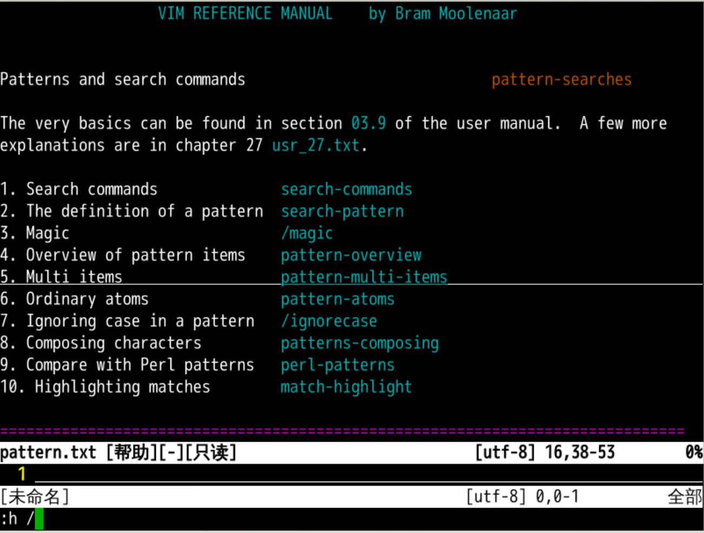
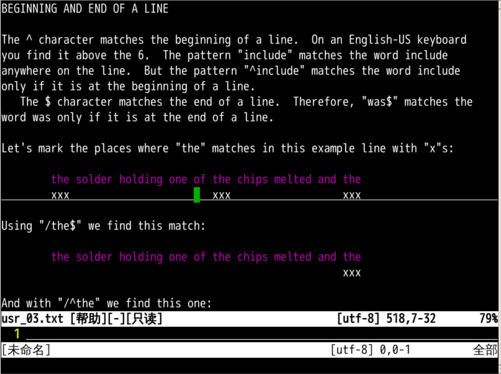
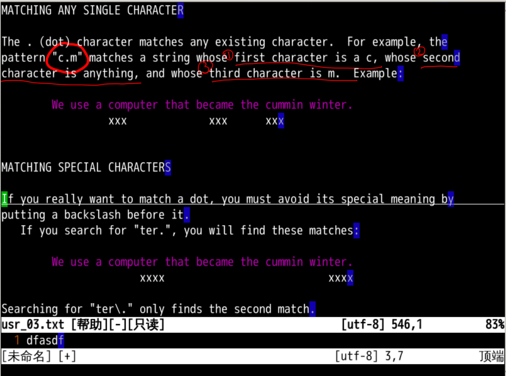
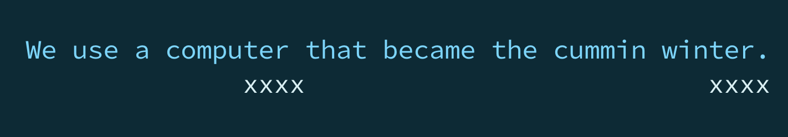
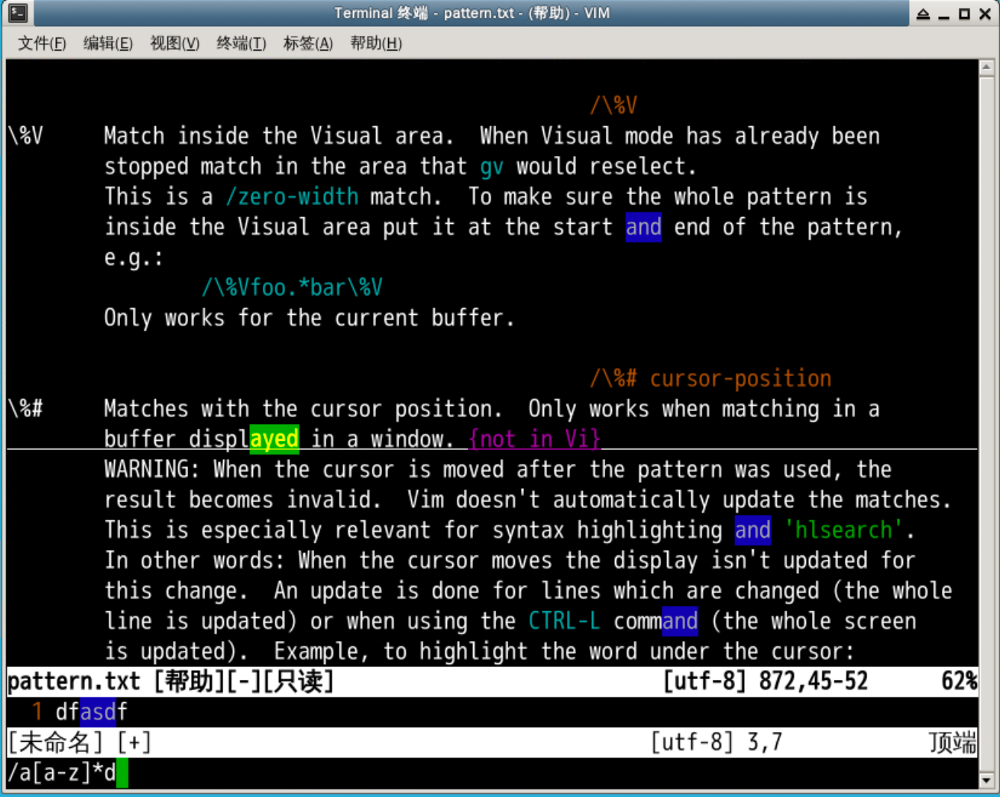
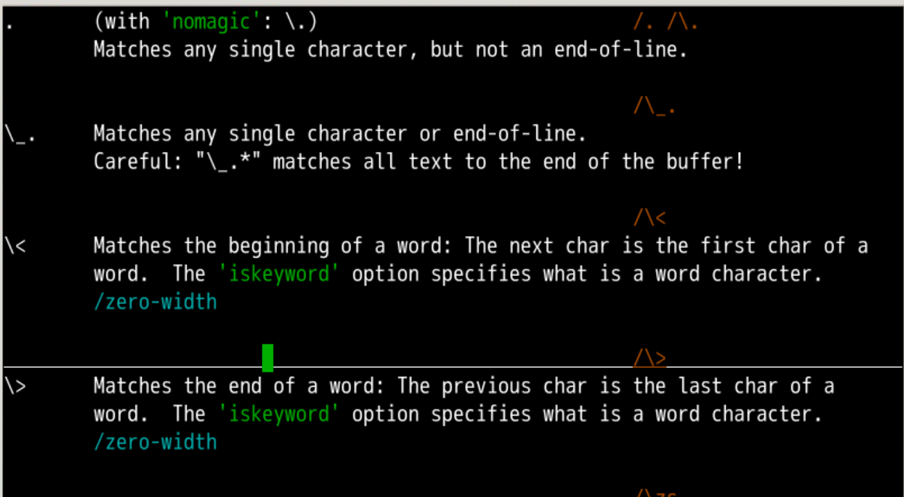
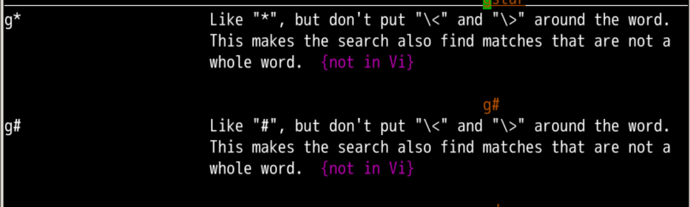
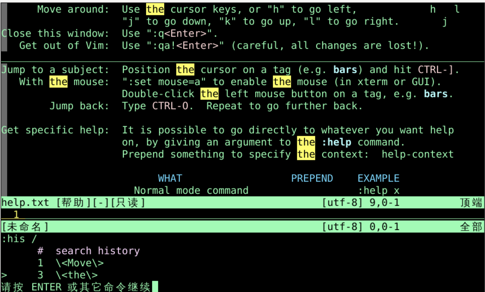

:set incsearchignorecaseg# 反向不按单词
继续查找
N改变方向
这个搜索可以做一些模糊匹配吗？
:h / 可以找到关于搜索相关的帮助patterns.txt03.9 的超链接位置

/include 匹配所有的 include^ 意味着行开头/^include 只匹配 include 在行头的/^# 只匹配 # 在行头的$ 意味着行结尾/the.$ 只匹配 the. 在行尾的/^End$ 匹配行头接着 End，然后就是行尾的一行:g/^$/d 删除所有空行
行头行尾和词头词尾很像
^ 本身就是跳到行头$ 本身就是跳到行尾. 可以匹配任意字符，作为通配符来使用/c.mc. 就是任意字符第三个字符为 m

可以匹配 company 中的 com
camera 中的 camter. 匹配 ter 后面加一个字符
.\\.\ 转义之后.就不再代表任意字符了/ter\. 就是寻找 ter.. 代表任意字符/c.m 匹配 c和m中间有一个字符 的情况/c..m 匹配 c和m中间有两个字符 的情况/c...m 匹配 c和m中间有三个字符 的情况
如果我想查找 c 和 m 中间有任意多个字符怎么办？
* 通配符/a* 意味着出现 0 到任意多个 a/c.*m 在 c 和 m 中间出现 0 到任意多个 .（任意字符）/c[a-z]*m 这样就是中间出现任意多个 [a-z]小写字母 了:g/^\s*$/d 删除搜有只有空格和tab的行\s代表空格和tab
^ 和 $ 分别代表着行头和行尾
\< 意味着单词开头\<a 意味着 a 开头的单词\>意味着单词结尾b\> 意味着 b 结尾的单词\<a[a-z]*b\>*、# 查找的时候

^ 意味着行开头$ 意味着行结尾
任意字符
. 代表任意字符 [a-z] 代表任意小写字母
字符数量
* 代表 0 到任意多个前字符+ 代表 1 到任意多个前字符? 代表 0 或 1 个前字符
行头行尾
\< 意味着单词开头\> 意味着单词结尾